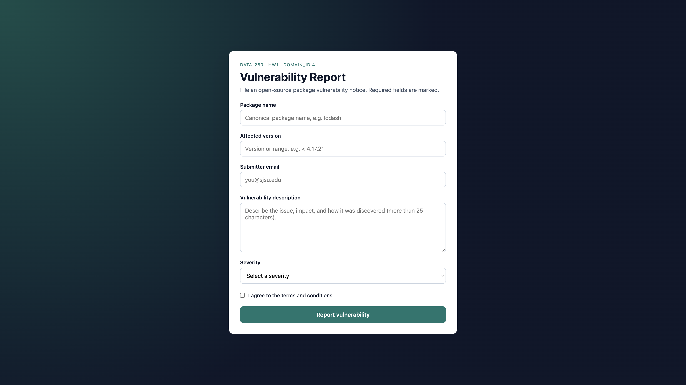

Ayushi Shringi · SID4 0036 · DOMAIN_ID 4 · port 8036 · model qwen3:4b · MacBook Pro M5 Pro 24GB
Tagged commit hash: (run git rev-parse HEAD after you commit and tag hw1)

# DATA-260 Homework 1 — Report
**Student:** Ayushi Shringi
**Repository:** `data260-0036`
**Tag:** `hw1` (apply after the final commit)
**Hardware:** MacBook Pro, Apple M5 Pro, 24 GB unified memory
**Local model:** `qwen3:4b` via Ollama 0.32.14 (handout default `qwen3:8b` not used; 4B Qwen3 was already pulled and is tool/JSON capable)
## Personal configuration
| Value | Definition | This student |
| --- | --- | --- |
| SID4 | Last four digits of SJSU Student ID | 0036 |
| PORT_BASE | 8000 + (SID4 mod 900) | 8036 |
| PREFIX | "s" + SID4 | s0036 |
| SEED | SID4 | 0036 |
| VERIFY_SEED | 260000 + SID4 | 260036 |
| DOMAIN_ID | SID4 mod 8 | 4 |
| Assigned domain | table in handout | Open-source package vulnerabilities |
`36 mod 8 = 4`, `8000 + (36 mod 900) = 8036`.
---
## Part 1 — HTML form and JavaScript
`DOMAIN_SCHEMA.md` defines entity **Vulnerability Report** with primary field `packageName`, secondary `affectedVersion`, submitter email, description, and four severity categories.
The page title is `HW1-Ayushi Shringi`. The largest heading (`h1`) is **Vulnerability Report**. The first text input uses `autofocus`. Validation uses an arrow function: description must be **more than 25 characters**, and the terms checkbox must be checked. After success the script:
1. logs a JSON string of the form data
2. destructures `packageName` and `submitterEmail`
3. spreads in `submissionDate`
4. increments a closure-based submission counter
### Localhost screenshot
App served with `python3 -m http.server 8036` (Docker Desktop is not installed on this Mac; `Dockerfile` / `docker-compose.yml` still build an nginx image that listens on **8036**).
See `reports/hw01/screenshots/01-form-localhost.png`.
### Docker / AWS ECS
- **Docker:** `docker compose up --build` then open `http://127.0.0.1:8036/`. Screenshot of Docker is pending Docker Desktop install.
- **AWS ECS:** `deploy/ecs-task-definition.json` is a one-task Fargate skeleton. AWS CLI is not on this machine; public-IP screenshot is pending your AWS account (push image to ECR, replace the image URI, create a service with **one** task and a public IP, SG TCP 8036).
---
## Part 2 — Agentic AI (Planner → Reviewer → Finalizer)
**Command:**
```bash
python3 agents_demo.py --input reports/hw01/cases/nondeterminism_input.json
```
Agents do **not** hardcode “package vulnerability” keywords. Tags come from the title/body of the input file.
### Console (representative successful run)
Planner tags: `grpc-security`, `protobuf-vulnerability`, `network-privilege-escalation`.
Reviewer: `changed: true` (claimed a shorter summary / version-range tidy-up; tags kept).
**Publish JSON:**
```json
{
"tags": ["grpc-security", "protobuf-vulnerability", "network-privilege-escalation"],
"summary": "gRPC reflection in protobuf-java 3.21-3.25 leaks private field names across package versions, enabling attackers to map internal authorization flags via error payloads."
}
```
Full transcript: `reports/hw01/raw/agents_demo_console.txt`.
### Short answers
- **Q1.** `grpc-security`, `protobuf-vulnerability`, `network-privilege-escalation`
- **Q2.** gRPC reflection in protobuf-java 3.21-3.25 leaks private field names across package versions, enabling attackers to map internal authorization flags via error payloads.
- **Q3.** Yes. The Reviewer set `changed: true` and described a summary/word-count edit even though the three tags stayed the same.
### What each step does (own words)
**Planner** reads only the supplied title and body and proposes three filing tags plus a short summary. **Reviewer** checks that those tags are actually about the text (not a canned domain list) and that the summary is ≤25 words. **Finalizer** emits the publish object `{tags, summary}` as strict JSON for downstream use.
---
## Part 3 — Measuring non-determinism
Fixed input (never edited after creation): `reports/hw01/cases/nondeterminism_input.json`.
| Metric | Temp 0.0 | Temp 0.7 |
| --- | --- | --- |
| Distinct tag sets | 1 | 15 |
| Tags in all 20 runs | grpc-security, protobuf-vulnerability, network-using-privilege-escalation | none |
| Tags in exactly 1 run | none | 16 singleton strings (see METRICS.md) |
| Latency p50 / p95 / p99 (ms) | 3545.1 / 3689.3 / 3766.0 | 3553.2 / 4034.2 / 4079.0 |
Two users with the same input at temperature 0.7 can see completely different tag trios (15 distinct sets; nothing in common across all 20). At temperature 0.0 they see one frozen trio every run. That drift is fine for exploratory tags on a blog card. It is not fine if a tag string is used as the routing key for a security ticket.
Raw rows: `reports/hw01/raw/nondeterminism_40_runs.json` and `.csv`.
---
## Part 4 — Model client and token accounting
`src/model_client.py` defines `complete(messages, tools=None, ...)`. `agents_demo.py` and `hw1_client.py` both import it.
`AGENT.md` requires **bullet-only** code review. `python3 hw1_client.py` runs a five-turn conversation, prints per-turn input/output/total tokens, supports `/stats` (turn count, cumulative tokens, serialized history length, **no history mutation**), and prints totals on exit.
### Why is prior conversation resent?
The Ollama chat API is stateless per HTTP request. The client must resend the whole `messages` array so the model sees earlier Q&A.
### System prompt vs user message
The system prompt is standing policy (`AGENT.md`). User messages are the snippets to review. Mixing them would let a user overwrite review rules.
### Why input tokens grow, and what limits them
Each turn appends another user + assistant pair, so `prompt_eval_count` rises. The limit is the model context window (and any truncation you add). `/stats` serialized length is a cheap proxy for that growth.
---
## Reproducible commands
```bash
make run-web # http://127.0.0.1:8036/
make verify-hw01
python3 agents_demo.py --input reports/hw01/cases/nondeterminism_input.json
python3 hw1_client.py
python3 scripts/run_nondeterminism.py
docker compose up --build # if Docker is installed
```